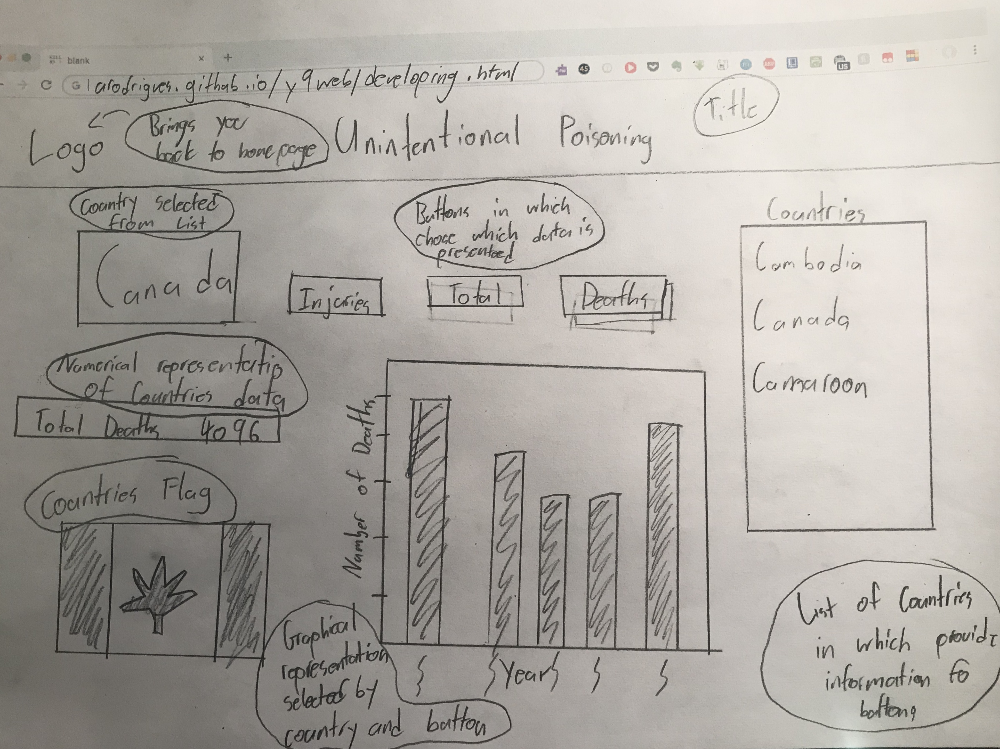
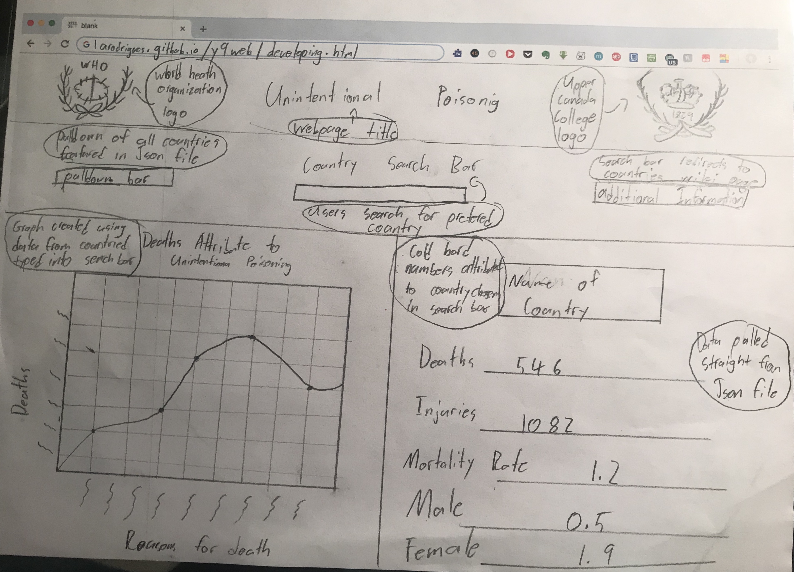

| Developing ideas Criterion B |
i. develops detailed design specifications, which explain the success criteria for the design of a solution based on the analysis of the research
ii. develops a range of two feasible design ideas, using an appropriate medium(s) and detailed annotation, which can be correctly interpreted by others
iii. presents the chosen design and justifies fully and critically its selection with detailed reference to the design specification
iv. develops accurate and detailed planning drawings/diagrams and outlines requirements for the creation of the chosen solution.
Design Specifications
In order for my product to be a succes there are a few design specifications in which my website must fulfill to be a considered succes. These specifications outline the use of html, css, and javascript to create a interesting looking, easy to navigate, and helpful presentatio of data. These specifications will ensure the website meets a minimun standrad. Although it may be unreaistic to meet all the specifications, they will work as an outline or blueprint to create a succesful website. on the other hand other specifications or ideas may be presented in the final product in which were not representing on the original specificatiosn list.
- - With the use of html5 include at least 2 charts or graphs
- - As analyzed through criterion A ensure the use of lines, borderds and colours to make a visually pleasing layout
- - Include the use of Javascript to create an interactive searcg bar for known variables
- - Taking user chosen inforation and creatinga graphical informational experience through lists
- - Make sure that the webpage is not singlar scrolling as supposed to a dual wide screen with components side by side
- - Ensure that buttons are placed in easy to find locations in which users can use to sxpress data in which they have requested
Feasible Design Ideas
Design 1 - Single Pannel Webpage with interactive List and Buttons

Design 2 - Dual Pannel Webpage with Interactive Search Bar

Chosen Design
I have chosen to create my webpage surrounding the fundametals and structure of design 2. The Dual Pannel Webpage allows for a very easy understand informational webpage in which my directed personeel will be able to understand and work with. The ability to have two different sources of data side by side allows the user to refer toe ach to ensure full understanding. This allow increases interest without the need to scroll down. Above the dual pannels lays a row in which users can look through a pulldown menu to find their prefered country. Once they have found their country all they have to do is type in the name to generate a graph and numerical data. In addition if more information is needed by the user a second dearch bar will redirect you to an external infromation site about the coutry. Design 2 allows all my design criteria to be met if created properly. Another reason I chose design 2 is by peer decision making. I explained both diagrams to friends and family members and discovered that design 2 won by popular vote. I believe this design allows me to create my ideal webpage following my succes criteria and ideal audience appropriately.
Design 2 - Dual Pannel Webpage with Interactive Search Bar
Planning Ideas
Stage 1 - Within this stage I will create the html structure for my webpage, this includes opening Brackets, and creating a new file with an html tag. This stage outlines the very basics to creating a webpage.
Stage 2 - This stage includes the styling and looks for the website. These are designed through css using the style tags. Within this stage I will implant a background colour for my body and decide on fonts and font colurs for my webpage. Style will also allow me to format where each section, paragraph, button or graph will be placed on a layout standpoint.
\
Satge - 3 Stage 3 allows me to interpret the json file and data within. This will allow me to easily acces the data and present it numerically or graphically. This interpretation allows me to sift through more than 50,000 lines of code and pin point and extract the exact data needed.
Stage 4 - Stage 4 outlines the use of javascript to create a user personalized experience. This stage is where the buttons come to life. With the use of javascript words typed into a search bar or buttons clicked will act accordingly and present interpreted data from the json file.